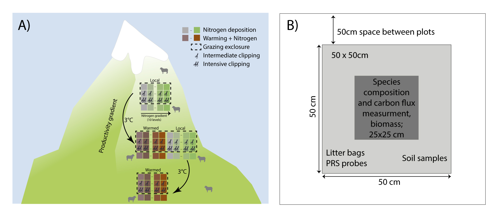
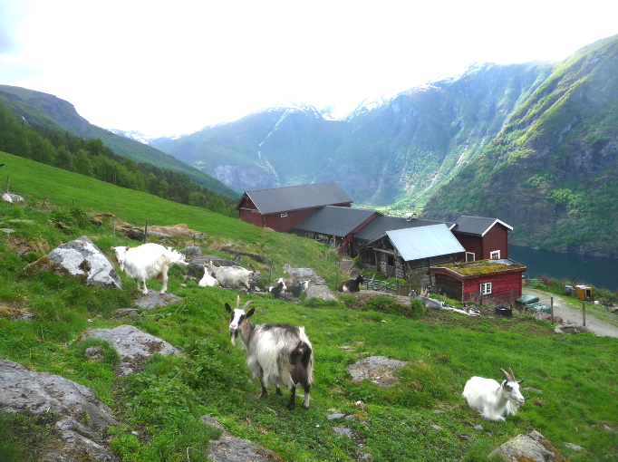
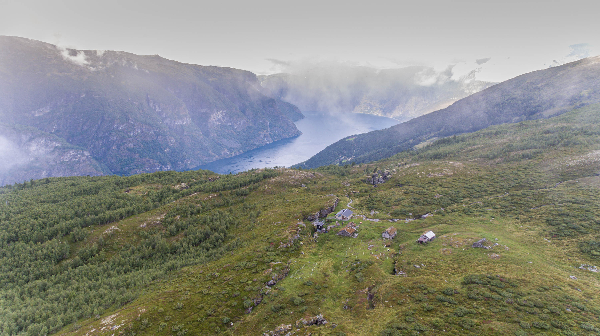
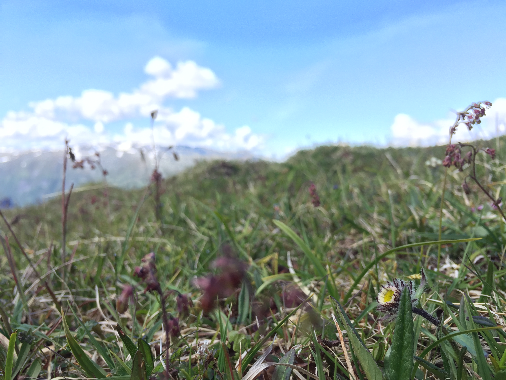
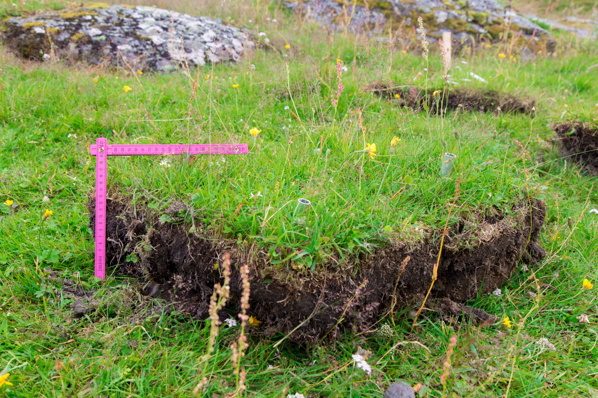
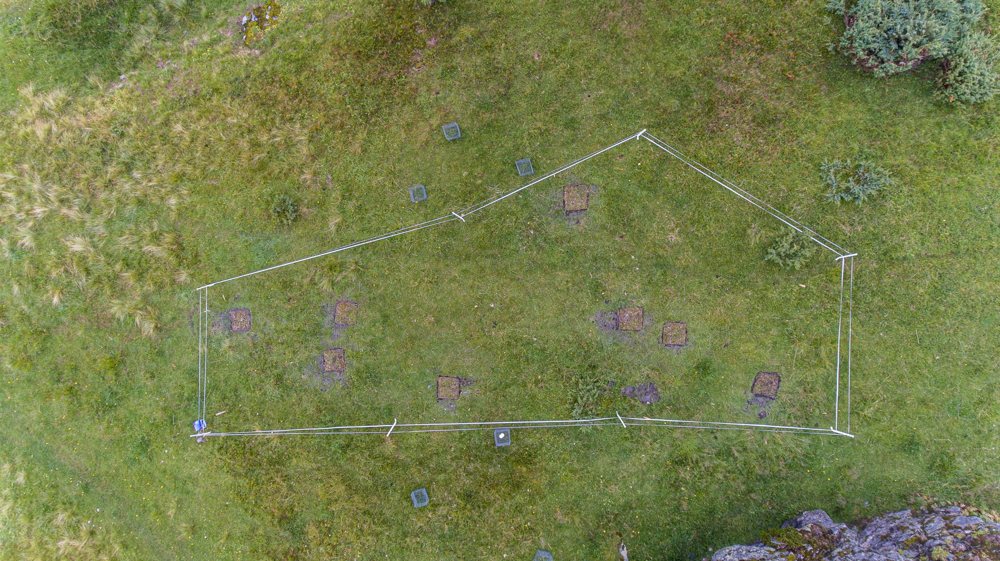

37 Three-D project
Create
The aim of the ThreeD project is to study global change impacts on biodiversity and ecosystem carbon fluxes. For a complete description of the experiment see here.
37.1 Study sites
The study is conducted in three semi-natural grassland sites in western Norway. The sites are location on calcareous soil (loamy sand). The sites were chosen to fit within an elevational gradient with three temperature levels that differ in c. 400 m elevation, a temperature difference of approximately 3°C in summer temperature (Figure 37.1). The sites correspond to boreal, sub-alpine and alpine biogeographic zones. Other factors such as history, bedrock, vegetation type and structure, slope and exposure were kept as constant as possible among the selected sites within each country. The sites are grazed by sheep and goats.
The lowest site Vikesland is locate at 469 m a.s.l. (60.9°N, 7.2°E; Figure 37.2). It is located near a farm, with 200 goats. In summer, these goats are moving up and down the mountains each day, to graze at higher elevation and being milked at the farm in the valley. The vegetation is dominated by Agrostis capillaris, Anthoxantum odoratum, Achillea millefolium, Ranunculus acris, and Rumex acetosa.

The middle site Joasete is a summer farm and located at 920 m a.s.l (Figure 37.3). The area around the summer farm is mostly grazed by sheep and sometimes goats. The vegetation at Joasete is well adapted to the grazing pressure and nutrient input by the animals. The dominant plant species are Agrostis capillaris, Deschampsia cespitosa, Achillea millefolium, Ranunculus acris, Ranunculus repens, and Rumex acetosa.

The highest site Liahovden is located at 1290 m a.s.l (Figure 37.4). It is grazing moderately by sheep, deer and reindeer. The vegetation is a species rich grassland, typical for nutrient soils in Norwegian alpine vegetation with Achillea millefolium, Antennaria dioica, Bistorta vivipara, Leontodon autumnalis, Silene acaulis, and Thalictrum alpinum.

37.2 Experimental treatments
At each site, ten blocks, with 8 plots (50 x 50 cm) were marked in each corner. Six plots were chosen relatively close to each other (inside the fence) and two plots were chosen further away (outside fence). Each plot was given a unique originPlotID starting at the upper left corner in block 1 and the highest site. The numbering was continued to 160. After transplanting, each turf also received a unique destinationPlotID (a number from 1-200; see Figure 37.1 and below). Each plot received a combination of each treatment randomly (warming, nitrogen addition and grazing, see below). The randomization of the treatments was done in two steps. First, the 10 nitrogen levels were assigned randomly per block (i.e. block 1 received the same nitrogen level in each site). We chose to randomize the nitrogen treatment at the block level to avoid nitrogen contamination between the plots within the blocks. Second, the warming and grazing treatments were randomized within block. The six plots within each block (inside the fence) were randomly assigned a warming and grazing treatment. The two plots per block located outside the fence, were randomly assigned a warming treatment.
37.2.1 Warming treatment
The warming treatment was conducted at the end of the growing season in 2019, by transplanting entire plant communities to lower elevation (c. +3°C; Figure 37.1). The upslope left-hand corner of each turf was marked with a toothpick that the turfs could be placed in the similar position relative to the slope and block orientation at the destination site. We used a knife to cut the turfs to 50 x 50 cm and to a depth of c. 10 - 25 cm (Figure 37.5), unless the soil was shallower, as was the case for some of the alpine plots. After excavation, the turfs were packed into a cardboard box and transported to their respective target sites within one day. The control plots were not excavated or moved. We did not have local transplants, to control for the transplanting effect, because this was tested in a previous project and the transplanting did not affect species composition in Norway (Vandvik et al. 2020) or China (Yang et al. 2018).

The turfs were fitted into the gaps created by excavating turfs at the destination site, except for the low site, where gaps had to be made. Each block received one plot of each treatment. Turfs were placed in the block with the same numerical value (1 - 10) and nitrogen level in the destination site as they originated from in the origin site. Transplanted turfs were carefully planted into their destination plots (destinationPlotID) ensuring that the turf orientation was correct (using the toothpick marking the uphill left corner of each turf) and that the soil surface was in plane with the surrounding vegetation, and that the edges of the excavated plot was in good contact with the edges of the gap created when the original turf was excavated from the plot (Figure 37.6). If necessary, loose soil was carefully removed from the underside of the turf, or local soil was added to the gap or around the edges to achieve this.

37.2.2 Nitrogen addition
In each plot we added slow dissolving fertilizer as pellets (YaraBela OPTI-NS 27-0-0 (4S)). We used oxidised nitrogen (NO and N2O) formed mainly by combustion processes, which are the main sources of atmospheric nitrogen deposition in remote regions (i.e., away from intensive agriculture and other sources or reduced nitrogen). The fertilizer was added once at the start and once in the middle of the growing season from 2020 - 2022. Each block received one of the seven nitrogen levels: 0, 0.5, 1, 5, 10, 50, 100, 150 kg N ha−1 yr−1. Three of the blocks were controls and received 0 kg N ha−1 yr−1.
The natural nitrogen deposition in Norway is 1.5-3.5 kg N ha−1 yr−1. The critical load for changing species composition in these alpine grasslands is approximately 5-10 kg N ha−1 yr−1 in Norway. We therefore wanted to have a range of nitrogen levels that were below and well above this critical load.
37.2.3 Grazing treatment
The warming and nitrogen treatments were crossed with four grazing treatments. Grazing was simulated by clipping the vegetation manually with scissors 2-3 cm above the ground (Figure 37.7). The four grazing treatments were natural grazing (N; outside the fence), medium level of grazing (M; 2x clipp), intensive level of grazing (I; 4x clipp), and untreated control plots (C). The intermediate clipping level reflects the natural grazing level outside the exclosure and should control for differences between grazing and clipping (i.e. clipping is not selective and will not add faeces and urine). The medium and intensive plots were clipped 2 or 4 times during the growing season. The clipping treatment was conducted in 2020 - 2022.

37.3 References
Vandvik, Vigdis, Olav Skarpaas, Kari Klanderud, Richard J Telford, Aud H Halbritter, and Deborah E Goldberg. 2020. “Biotic Rescaling Reveals Importance of Species Interactions for Variation in Biodiversity Responses to Climate Change.” Proc. Natl. Acad. Sci. U. S. A. 117 (37): 22858–65.
Yang, Yan, Aud Helen Halbritter, Kari Klanderud, Richard J Telford, Genxu Wang, and Vigdis Vandvik. 2018. “Transplants, Open Top Chambers (OTCs) and Gradient Studies Ask Different Questions in Climate Change Effects Studies.” Front. Plant Sci. 9: 1574.